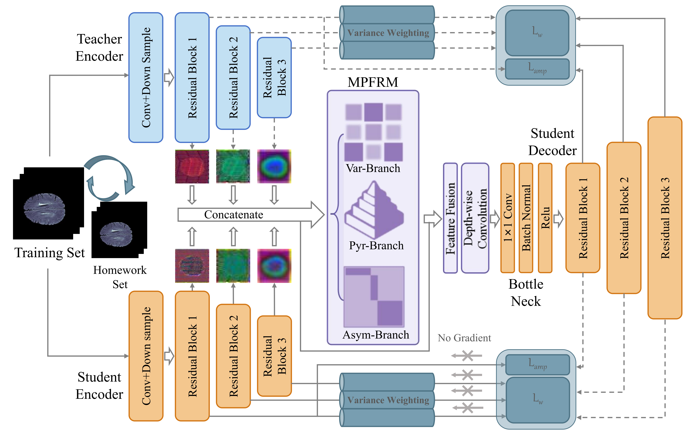
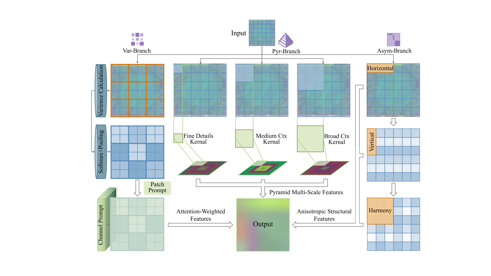
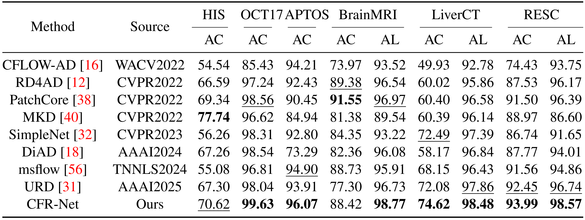
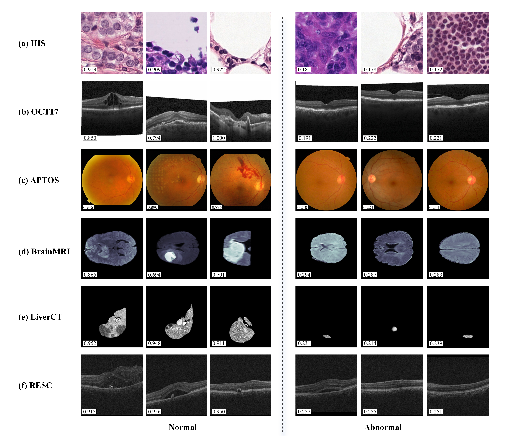

Medical image anomaly detection remains challenging because networks pretrained on natural images often exhibit limited adaptability to medical images, where abnormal patterns appear as fine-grained local shifts, multi-scale contextual mismatches, and orientation-sensitive structural deviations. To address this, we propose the Collaborative Feature Refinement Network (CFR-Net), which combines shared teacher-student feature refinement before decoding with cross-space consistency after decoding. CFR-Net refines frozen teacher features and trainable student features using a Multi-Path Feature Refinement Module (MPFRM) with shared parameters, imposing common multi-path refinement rules on generic visual references and representations adapted to the medical domain, thereby mitigating domain discrepancy while modeling local, multi-scale, and orientation-sensitive feature characteristics. A variance-sensitive objective and dynamic "homework set" reorganization further support layer-adaptive consistency learning. Experiments on medical benchmarks show that CFR-Net achieves competitive anomaly classification and strong anomaly localization performance when trained on normal data.

CFR-Net introduces input-side collaborative refinement, where frozen teacher features and trainable student features are refined by MPFRM with shared parameters before decoding.
After decoding, CFR-Net applies output-side cross-space consistency, constraining each decoded stream with the complementary encoder feature space.
Training is further supported by variance-sensitive feature-level weighting and a dynamic homework-set strategy, stabilizing normal-only optimization across hierarchical representations.

MPFRM refines hierarchical teacher and student encoder features through three complementary branches. The variance-weighted branch models patch-level feature dispersion, the multi-scale pyramid branch aggregates contextual information across receptive fields, and the asymmetric convolution branch captures orientation-sensitive structural patterns. Their outputs are integrated with the input encoder features through residual connections before decoding.

In the table, bold values indicate the best results and underlined values indicate the second-best results. CFR-Net achieves the best performance in 7 out of 9 evaluated tasks, showing particularly strong anomaly localization results while maintaining competitive classification performance across different medical imaging benchmarks.
We present qualitative comparisons of anomaly localization maps and classification heatmaps. The results are arranged from left to right as: input image, predictions from state-of-the-art methods including CFLOW-AD, DiAD, msflow, and URD, our method, and ground truth annotations. CFR-Net produces more compact and spatially precise anomaly responses, especially around lesion regions and layer-wise abnormal structures.
Examples of localization maps and classification heatmaps across different medical datasets.

Examples of predicted anomaly scores for normal and abnormal samples. Each image is shown with the score predicted by CFR-Net, where a higher score indicates a higher likelihood of being anomalous. These examples illustrate the model's ability to separate normal and abnormal cases under the normal-only training setting.
@article{nie2026cfr,
title={CFR-Net: Collaborative Feature Refinement Network for Medical Image Anomaly Detection},
author={Nie, Zihan and Xu, Muhao and Feng, Wei and Cui, Yuan and Wei, Hua and Niu, Sijie and Wan, Yi and Wei, Xunbin and Song, Weiye and Ge, Zongyuan},
journal={},
year={2026}
}